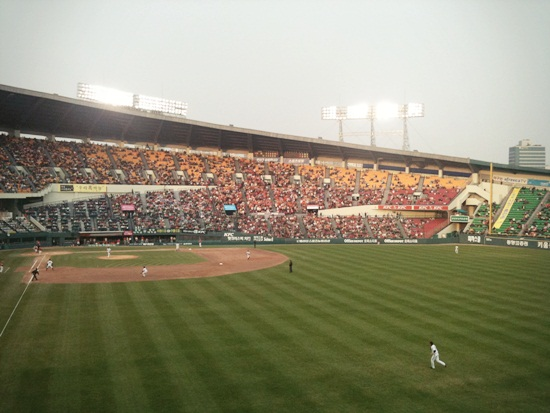

오랜만에 따스했던 일요일 오후, 야구장을 찾았다. 출입구를 지나 계단을 오르자마자 시야를 강습하는 새파란 잔디밭이 아찔하게 청량했고, 쨍한 봄볕 아래 느긋하게 홀짝이는 맥주의 달콤함은 열띤 관중의 함성과 어우러져 나른하게 달아올랐다. 온갖 걸 그룹의 댄스를 섭렵한 예쁜이 치어리더 언니들은 너무 멀리 있어 그 모습이 어렴풋했지만 가까이에서 쑥스러워하며 흘깃거리는 것보다는 적당히 거리가 있는 편이 낫다고 위안하며, 낮술을 동반한 주말 오후 나들이의 한가로움을 만끽했다.
이 날 트윈스의 용병 투수 곤잘레스는 오랜 부진을 털고 6이닝동안 무실점으로 호투했고, 부활한 조인성은 7회 말 득점의 물꼬를 텄으며, 노회한 마무리 오카모토는 방어율 제로의 행진을 이어갔다.